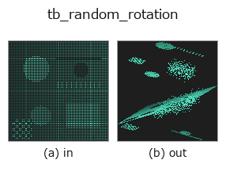

typed op• 数据种类:points → points
• 调用:fullseye.apply(img, "tb_random_rotation", a=0.5, b=0.5)(2-D 的模型是一张图 + 两个标量旋钮 a,b∈[0,1])

*图为在 128×128 合成输入上实际运行的输出。左为输入，右为输出。点云以俯视散点显示(亮度 = z)，一维序列为折线，体数据为沿 z 的最大值投影，视频为中间帧，复数图像为幅值；无法成像的返回值直接显示数值。*
*旋钮 a 不改变输出(实测: 0.1 / 0.5 / 0.9 相同)。*
*旋钮 b 不改变输出(实测: 0.1 / 0.5 / 0.9 相同)。*
阶段(前置算子 → 本算子，从左到右):
▸ tb_random_rotation: stages (docs site)
换别的图像(合成场景 / 照片 / 硬币。上排为输入，下排为对应输出。旋钮取默认):
▸ tb_random_rotation: other inputs (docs site)
应用随机旋转并返回 `(rotated, R)`（模拟视点变化）。
> 以下的详细说明为原文 —— 摘要与标题已翻译。
`R は正規直交・det=+1(rotated = points @ R.T = 各点に R` を左作用、
逆変換は `rotated @ R)。max_angle=None` なら Shoemake 法で一様ランダム回転、
`max_angle 指定(ラジアン, 期待 [0, π])なら軸を球面一様・角を [0, max_angle]`
一様に取り、回転角を制限する(`arccos((tr R -1)/2) ≤ max_angle` を厳密に保証)。
`max_angle < 0 は ValueError、max_angle=0` は単位行列。単位はラジアン(度で
渡すと桁違いに大きくなる)。`max_angle=None` の一様回転は上限 π までの大きな回転も
普通に出るので、視点変化の範囲を絞りたいときは `max_angle` を使う。回転は原点まわり
で、雲が原点から離れていれば重心も動く。`R の規約 rotated = points @ R.T` は
`register_fpfh・register_shot が返す dst ≈ src @ R.T + t` と同じ向きなので、
推定結果との角度誤差は `arccos((tr(R_est·Rᵀ)-1)/2) で測れる。seed` で決定論的
(同 seed なら同じ `R)。返り値は float64 の (N,3) と (3,3)`。
2-D 進化レジストリへ橋渡しした 3d の op `random_rotation。実装は同じで、呼び出し規約だけ op(v, a, b) に合わせてある。この op に調整点は無く、a も b` も使われない。
• 示例数据目录(下载 URL / 许可证) —— 2-D 用 skimage.data(BSD/公有领域)加合成图,3-D 给出真实数据源(Stanford/PDS 等)的下载 URL。
• 算子来历与参考文献 —— 该算子族所依据的研究/方法出处。
下面的程序已确认可以运行(与图相同的输入)。在 Studio 帮助中，此块会变成按钮，可当场加载并运行。
img_to_points 0.50 0.50 tb_random_rotation 0.50 0.50
▸ Load this pipeline · Load & run
下面的示例调用的是底层账本算子 random_rotation。此桥接算子只是把同一实现适配为 fn(v, a, b) 约定，行为完全相同(只是调用形式不同)。
• augment_pointcloud — py -3.11 examples_3d/augment_pointcloud.py
• sh_descriptor_retrieval — py -3.11 examples_3d/sh_descriptor_retrieval.py
• shape_retrieval — py -3.11 examples_3d/shape_retrieval.py
points 作为输入)identity · tb_points_to_voxel · tb_estimate_point_normals · tb_iss_keypoints · tb_project_points · tb_render_point_depth · tb_statistical_outlier_removal · tb_radius_outlier_removal
typed)tb_points_to_voxel · tb_estimate_point_normals · tb_iss_keypoints · tb_project_points · tb_render_point_depth · tb_statistical_outlier_removal · tb_radius_outlier_removal · tb_voxel_grid_downsample
*Provenance: ops.py — 2D 算子登记表。本条目由 tools/opdocs.py md 自动生成(请勿手工编辑)。*
© 2026 Kazufumi Furuse — Fullseye operator documentation. Licensed under Apache-2.0.
{kind=link}
{kind=link}